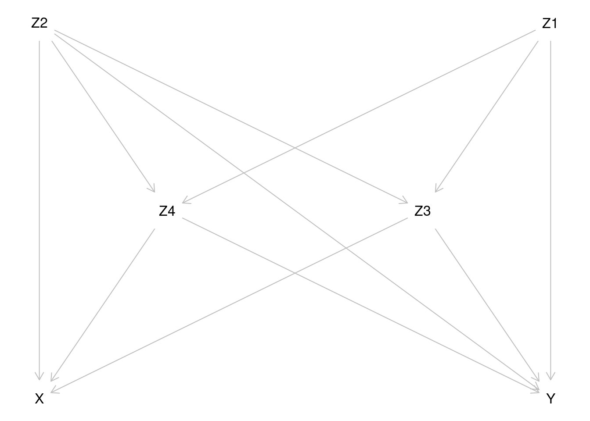
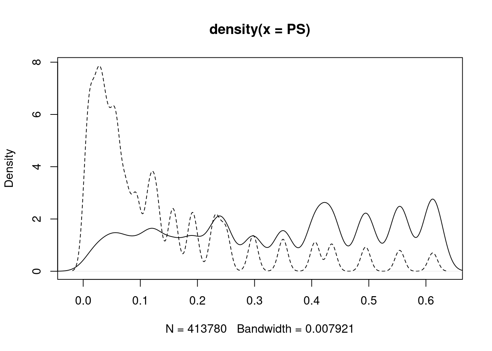
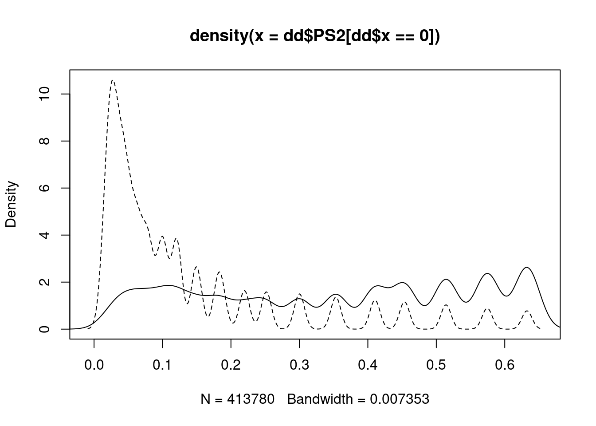

Chapter 14 Causal inference 2: Model-based estimation of causal estimands
Sources of inspiration: Luque Fernandez, M.A. et al.
(2018) Stat Med
2018;37(16):2530-2546 and
Smith et al. (2022) Stat Med
2022;41(2):407-432.
We shall illustrate with simulated data the estimation of causal effects of a binary exposure \(X\) when the outcome \(Y\) is also binary, and there is a set of four covariates \(Z = (Z_1, Z_2, Z_3, Z_4)\). As a background story, we imagine a population of cancer patients, in whom the variables and the assumed marginal distributions of the covariates are
| Variable | Description |
|---|---|
| \(X\) | treatment; 1: radiotherapy only, 0: radiotherapy + chemotherapy |
| \(Y\) | death during one year after diagnosis of cancer |
| \(Z_1\) | sex; 0: man, 1: woman; \(Z_1 \sim \text{Bern}(0.5)\) |
| \(Z_2\) | age group 0; young, 1: old; \(Z_2 \sim \text{Bern}(0.65)\) |
| \(Z_3\) | stage of cancer; 4 classes; \(Z_3 \sim \text{DiscUnif}(1, \dots, 4)\) |
| \(Z_4\) | comorbidity score; 5 classes; \(Z_3 \sim \text{DiscUnif}(1, \dots, 5)\) |
For simplicity, covariates \(Z_3\) and \(Z_4\) are treated as continuous variables in the models. The assumed causal diagram is shown below.

For more generic notation, the probabilities of \(Y=1\) will be expressed
as expectations, e.g. \(E(Y^{X=x}) = P(Y^{X=x}=1)\) and
\(E(Y|X=x, Z=z) = P(Y=1|X=x, Z=z)\), where \(Z\) is the vector of relevant
covariates. The same principle is applied in expressing the conditional
probability of \(X=1\) given \(Z=z\). The fitted or predicted probabilities
of \(Y=1\) are denoted as fitted \(\widehat{Y}\) or predicted values
\(\widetilde{Y}\) of \(Y\) with pertinent subscripts and/or superscripts.
Both \(X\) and \(Y\) are modelled by logistic regression. The expit-function
or inverse of the logit function is defined:
\(\text{expit}(u) = 1/(1 + e^{-u})\), \(u\in R\). This is equal to the
cumulative distribution function of the standard logistic distribution,
the values of which are returned in R by plogis(u). The R function
that returns values of the logit-function is qlogis().
The true model assumed for the dependence of exposure \(X\) on covariates: \[ E(X|Z_1 = z_1, \dots, Z_4 = z_4) = \text{expit}(-5 + 0.05z_2 + 0.25z_3 + 0.5z_4 + 0.4z_2z_4) . \] The assumed true model for the outcome is \[ E(Y|X=x, Z_1 = z_1, \dots, Z_4 = z_4) = \text{expit}(-1 + x - 0.1z_1 + 0.35z_2 + 0.25z_3 + 0.20z_4 + 0.15z_2z_4) \] Note that \(X\) does not depend on \(Z_1\), and that in both models there is a product term \(Z_2 Z_4\), which appears weaker for the outcome model.
14.1 Control of confounding
Based on inspection of the causal diagram, can you provide justification for the claim that variables \(Z_2, Z_3\) and \(Z_4\) form a proper subset of the four covariates, which is sufficient to block all backdoor paths between \(X\) and \(Y\) and thus remove confounding?
Even though we have such a minimal sufficient set as indicated in item (a), why could it still be worth while to include covariate \(Z_1\), too, when modelling the outcome?
14.2 Generation of target population and true models
- Load the necessary packages.
## Loading required package: nnls## Loading required package: gam## Loading required package: splines## Loading required package: foreach## Loaded gam 1.22-3## Super Learner## Version: 2.0-29## Package created on 2024-02-06## Loading required package: glmnet## Loading required package: Matrix## Loaded glmnet 4.1-8## Welcome to the tmle package, version 2.0.1
##
## Use tmleNews() to see details on changes and bug fixes- Define the R-functions which computes expected values for the exposure and outcome based on the assumed true outcome model and the true exposure model.
EX <- function(z2, z3, z4) {
plogis(-5 + 0.05 * z2 + 0.25 * z3 + 0.5 * z4 + 0.4 * z2 * z4)
}
EY <- function(x, z1, z2, z3, z4) {
plogis(-1 + x - 0.1 * z1 + 0.35 * z2 + 0.25 * z3 +
0.20 * z4 + 0.15 * z2 * z4)
}- Define the function for the generation of data by simulating random values from pertinent probability distributions based on the given assumptions.
genData <- function(N) {
z1 <- rbinom(N, size = 1, prob = 0.5) # Bern(0.5)
z2 <- rbinom(N, size = 1, prob = 0.65) # Bern(0.65)
z3 <- trunc(runif(N, min = 1, max = 5), digits = 0) # DiscUnif(1,4)
z4 <- trunc(runif(N, min = 1, max = 6), digits = 0) # DiscUnif(1,5)
x <- rbinom(N, size = 1, prob = EX(z2, z3, z4))
y <- rbinom(N, size = 1, prob = EY(x, z1, z2, z3, z4))
data.frame(z1, z2, z3, z4, x, y)
}- Generate a data frame
ddfor a big target population of 500000 subjects
14.3 Factual and counterfactual risks - associational and causal contrasts
- Compute the factual risks of death for the two exposure groups \[ E(Y|X=x) = P(Y=1|X=x) = \frac{P(Y=1\ \&\ X=x)}{P(X=x)}, \quad x=0,1, \] in the whole target population, as well as their associational contrasts: risk difference, risk ratio, and odds ratio. Before that define a useful function
Contr <- function(mu1, mu0) {
RD <- mu1 - mu0
RR <- mu1 / mu0
OR <- (mu1 / (1 - mu1)) / (mu0 / (1 - mu0))
return(c(mu1, mu0, RD = RD, RR = RR, OR = OR))
}
Ey1 <- with(dd, sum(y == 1 & x == 1) / sum(x == 1))
Ey0 <- with(dd, sum(y == 1 & x == 0) / sum(x == 0))
round(Contr(Ey1, Ey0), 4)## RD RR OR
## 0.8949 0.6288 0.2661 1.4232 5.0286How much bigger is the risk of death of those factually exposed to radiotherapy only as compared with those receiving chemotherapy, too?
- Compute now first the counterfactual risks of death \(E(Y_i^{X_i=x}) = P(Y_i^{X_i=x}=1) = \pi_i^{X_i=x}\) for each individual under the alternative treatments or exposure values \(x=0,1\) with given covariate values, then the average or overall counterfactual risks \(E(Y^{X=1}) = \pi^1\) and \(E(Y^{X=0}) = \pi^0\) in the population, and finally the true marginal causal contrasts for the effect of \(X\): \[ \begin{aligned} \text{RD} & = E(Y^{X=1})-E(Y^{X=0}), \qquad \text{RR} = E(Y^{X=1})/E(Y^{X=0}), \\ \text{OR} & = \frac{E(Y^{X=1})/[1 - E(Y^{X=1})]}{E(Y^{X=0})/[1 - E(Y^{X=0})] } \end{aligned} \]
dd <- transform(dd,
EY1.ind = EY(x = 1, z1, z2, z3, z4),
EY0.ind = EY(x = 0, z1, z2, z3, z4)
)
EY1 <- mean(dd$EY1.ind)
EY0 <- mean(dd$EY0.ind)
round(Contr(EY1, EY0), 4)## RD RR OR
## 0.8273 0.6530 0.1743 1.2670 2.5462- Compare the associational contrasts computed in in item (a) with the causal contrasts in item (b). What do you conclude about confoundedness of the associational contrasts?
14.4 Outcome modelling and estimation of causal contrasts by g-formula
As the first approach for estimating causal contrasts of interest we apply the method of standardization or g-formula. It is based on a hopefully realistic enough model for \(E(Y|X=x, Z=z)\), i.e. how the risk of outcome is expected to depend on the exposure variable \(X\) and on a sufficient set \(Z\) of confounders. The counterfactual risks \(E(Y^{X=x}), x=0,1\), are marginal expectations of the above quantities, standardized over the joint distribution of the confounders \(Z\) in the target population. \[ E(Y^{X=x}) = E_Z[E(Y|X=x,Z)] = \int E(Y|X=x, Z=z)dF_Z(z), \quad x=0,1. \]
- Assume now a slightly misspecified model
mYfor the outcome, which contains only main effect terms of the explanatory variables: \[ \pi_i = E(Y_i|X_i=x_i, Z_{i1}=z_{i1}, \dots, Z_{i4}=z_{i4}) = \text{expit}\left(\beta_0 + \delta x_i + \sum_{j=1}^4 \beta_j z_{ij} \right) \] Fit this model on the target population using functionglm()
mY <- glm(y ~ x + z1 + z2 + z3 + z4, family = binomial, data = dd)
round(ci.lin(mY, Exp = TRUE)[, c(1, 5)], 3)## Estimate exp(Est.)
## (Intercept) -1.240 0.289
## x 1.052 2.863
## z1 -0.095 0.909
## z2 0.767 2.153
## z3 0.250 1.284
## z4 0.279 1.322There is not much idea in looking at the standard errors or confidence intervals in such a big population.
- For each subject \(i\), compute the fitted individual risk \(\widehat{Y_i}\) as well as the predicted counterfactual risks \(\widetilde{Y_i}^{X_i=x}\) for both exposure levels \(x=0,1\) separately, keeping the individual values of the \(Z\)-variables as they are.
dd$yh <- predict(mY, type = "response") # fitted values
dd$yp1 <- predict(mY, newdata = data.frame(
x = rep(1, N), # x=1
dd[, c("z1", "z2", "z3", "z4")]
), type = "response")
dd$yp0 <- predict(mY, newdata = data.frame(
x = rep(0, N), # x=0
dd[, c("z1", "z2", "z3", "z4")]
), type = "response")- Applying the method of standardization or g-formula compute now the point estimates \[ \widehat{E}_g(Y^{X=x}) = \frac{1}{n} \sum_{i=1}^n \widetilde{Y}_i^{X_i=x}, \quad x=0,1. \] of the two counterfactual risks \(E(Y^{X=1}) = \pi^1\) and \(E(Y^{X=0})=\pi^0\) as well as the marginal causal contrasts
## RD RR OR
## 0.8330 0.6508 0.1822 1.2800 2.6763The expectations \(E_Z[E(X=x, Z)]\) taken over the joint distribution of the confounders \(Z\) are empirically estimated from the data by simply computing the arithmetic means of the individually predicted values \(\widetilde{Y_i}^{X_i=x}\) of the outcome for the two exposure levels.
Compare the estimated contrasts with the true ones in item 3(b) above. How big is the bias due to slight misspecification of the outcome model? Compare in particular the estimate of the marginal OR here with the conditional OR obtained in item (a) from the pertinent coefficient in the logistic model. Which one is closer to 1?
- Perform the same calculations using the tools in package
stdReg(see Sjölander 2016)
##
## Formula: y ~ x + z1 + z2 + z3 + z4
## Family: binomial
## Link function: logit
## Exposure: x
##
## Estimate Std. Error lower 0.95 upper 0.95
## 0 0.651 0.000733 0.649 0.652
## 1 0.833 0.001562 0.830 0.836## Estimate Std. Error lower 0.95 upper 0.95
## 0 0.0000 0.0000 0.0000 0.0000
## 1 0.1822 0.0017 0.1788 0.1856## Estimate Std. Error lower 0.95 upper 0.95
## 0 1.00 0.0000 1.0000 1.0000
## 1 1.28 0.0028 1.2745 1.2855## Estimate Std. Error lower 0.95 upper 0.95
## 0 1.0000 0.0000 1.0000 1.0000
## 1 2.6763 0.0315 2.6146 2.7379Check that you got the same point estimates as in the previous item.
Again, the confidence intervals are not very meaningful when analysing
the data covering the whole big target population. Of course, when
applied to real sample data they are relevant. In stdReg package, the
standard errors are obtained by the multivariate delta method built upon
M-estimation and robust sandwich estimator of the pertinent covariance
matrix, and approximate confidence intervals are derived from these in
the usual way.
- If we are interested in the causal contrasts describing the effect of exposure among those exposed (like ATT), the relevant factual and counterfactual risks in that subset are
\[ \begin{aligned} \pi^1_1 & = E(Y^{X=1}|X=1) = E(Y|X=1) = \pi_1, \\ \pi^0_1 & = E(Y^{X=0}|X=1) = \sum_{X_i=1} E(Y|X=0, Z=z)P(Z=z|X=1) \end{aligned} \]
We are thus making and observed vs. expected comparison, in which the \(z\)-specific risks in the unexposed are weighted by the distribution of \(Z\) in the exposed subset of the target population. The risks and their contrasts are estimated from the fit of the outcome model:
EY1att.g <- mean(subset(dd, x == 1)$yp1)
EY0att.g <- mean(subset(dd, x == 1)$yp0)
round(Contr(EY1att.g, EY0att.g), 4)## RD RR OR
## 0.8949 0.7560 0.1389 1.1837 2.7488Compare the results here with those for the whole target population. What do you observe? Any guess about the causal effect of exposure among the unexposed; is it bigger or smaller than among the exposed or among the whole population?
- Incidentally, the true causal contrasts among the exposed based on the true model are similarly obtained from the quantities in item 3(b) above:
EY1att <- mean(subset(dd, x == 1)$EY1.ind)
EY0att <- mean(subset(dd, x == 1)$EY0.ind)
round(Contr(EY1att, EY0att), 4)## RD RR OR
## 0.8955 0.7680 0.1275 1.1661 2.5896Compare the estimates in the previous item with the true values obtained here.
14.5 Inverse probability weighting (IPW) by
propensity scores, and augmented IPWThe next method is based on weighting each individual observation by the inverse of the probability of belonging to that particular exposure group, which was realized, this probability being predicted by determinants of exposure.
- Fit first a model for the exposure including main effects of the \(Z\)-variables only. \[ p_i = E(X_i| Z_{1i} = z_{1i}, \dots, Z_{4i} = z_{4i}) = \text{expit}(\gamma_0 + \gamma_1 z_{1i} + \gamma_2 z_{2i} + \gamma_3 z_{i3} + \gamma_4 z_{4i} ), \quad i=1, \dots N \]
mX <- glm(x ~ z1 + z2 + z3 + z4,
family = binomial(link = logit), data = dd
)
round(ci.lin(mX, Exp = TRUE)[, c(1, 5)], 4)## Estimate exp(Est.)
## (Intercept) -6.3031 0.0018
## z1 -0.0161 0.9840
## z2 1.6260 5.0833
## z3 0.2391 1.2702
## z4 0.8369 2.3093- Extract the propensity scores, i.e. fitted probabilities of belonging to exposure group 1: \[ PS_i = \widehat{p_i} \], and compare their distribution between the two groups.
## Min. 1st Qu. Median Mean 3rd Qu. Max.
## 0.005256 0.041532 0.112765 0.172440 0.248554 0.613993with(subset(dd, x == 0), plot(density(PS), lty = 2))
with(subset(dd, x == 1), lines(density(PS), lty = 1))
How different are the distributions? Are they sufficiently overlapping?
- Compute the weights \(W_i = 1/\text{PS}_i\), when \(X_i=1\), and \(W_i = 1/(1-\text{PS}_i)\), when \(X_i=0\). Look at the sum as well as the distribution summary of the weights in the exposure groups. The sum of weights should be close to \(n\) in both groups.
## 0 1
## 498880.5 565237.5- Compute now the weighted estimates of the counterfactual risks for both exposure categories \[ \widehat{E}_w(Y^{X = x}) = \frac{ \sum_{i=1}^n {\mathbf 1}_{ \{X_i=x\} } W_i Y_i } {\sum_{i=1}^n {\mathbf 1}_{ \{X_i=x\} }W_i} = \frac{ \sum_{X_i = x} W_i Y_i }{\sum_{X_i=x} W_i}, \quad x = 0,1, \] and their causal contrasts, for instance \[ \widehat{\text{RD}}_{w} = \widehat{E}_w(Y^{X = 1}) - \widehat{E}_w(Y^{X = 0}) = \frac{ \sum_{i=1}^n X_i W_i Y_i }{\sum_{i=1}^n X_i W_i} - \frac{ \sum_{i=1}^n (1-X_i) W_i Y_i }{\sum_{i=1}^n (1-X_i) W_i} \]
EY1.w <- sum(dd$x * dd$w * dd$y) / sum(dd$x * dd$w)
EY0.w <- sum((1 - dd$x) * dd$w * dd$y) / sum((1 - dd$x) * dd$w)
round(Contr(EY1.w, EY0.w), 4)## RD RR OR
## 0.8037 0.6519 0.1518 1.2329 2.1868These estimates seem to be somewhat downward biased when comparing to true values. Could this be because of omitting the relatively strong product term effect of \(Z_2\) and \(Z_4\)?
5.Let us attempt to correct the estimates by a double robust approach called augmented IPW estimation (AIPW), which combines the g-formula and the IPW approach. The AIPW-estimator can be expressed in two ways: either an IPW-corrected g-formula estimator, or a g-corrected IPW-estimator.
\[ \begin{aligned} \widehat{E}_a(Y^{X=x}) & = \widehat{E}_g(Y^{X=x}) + \frac{1}{n} \sum_{i=1}^n \frac{ {\mathbf 1}_{\{X_i=x\}} W_i ( Y_i - \widetilde{Y}_i^{X_i=x} ) } {\sum_{i=1}^n {\mathbf 1}_{\{X_i=x\}} W_i} \\ & = \widehat{E}_w(Y^{X=x}) - \frac{1}{n} \sum_{i=1}^n \left[ \frac{ {\mathbf 1}_{\{X_i=x\}} W_i } {\sum_{i=1}^n {\mathbf 1}_{\{X_i=x\}} W_i } - 1 \right] \widetilde{Y}_i^{X_i=x}. \end{aligned} \]
EY1.a <- EY1.g + mean(dd$x * (dd$y - dd$yp1) * dd$w / sum(dd$x * dd$w))
## or EY1.w - mean( ( ( dd$x*dd$w /sum(dd$x*dd$w) ) - 1 )*dd$yp1 )
EY0.a <- EY0.g + mean((1 - dd$x) * (dd$y - dd$yp0) * dd$w / sum((1 - dd$x) * dd$w))
## or EY0.w - mean( ( ( (1-dd$x)*dd$w/sum((1-dd$x)*dd$w) ) - 1 )*dd$yp0 )
round(Contr(EY1.a, EY0.a), 4)## RD RR OR
## 0.8330 0.6508 0.1822 1.2800 2.6763Compare these results with those obtained by g-formula and by non-augmented IPW method. Was augmentation successful?
14.6 Improving IPW estimation and using R package PSweight
We now try to improve IPW-estimation by a richer exposure model. In
computations we shall utilize the R package PSweight (see PSweight
vignette).
- First, we compute the weights from a more flexible exposure model which contains all pairwise product terms of the parents of \(X\). According to the causal diagram, \(Z_1\) is not in that subset, so it is left out. The exposure model is specified and the weights are obtained as follows.
mX2 <- glm(x ~ (z2 + z3 + z4)^2, family = binomial, data = dd)
round(ci.lin(mX2, Exp = TRUE)[, c(1, 5)], 3)## Estimate exp(Est.)
## (Intercept) -5.085 0.006
## z2 0.143 1.154
## z3 0.243 1.275
## z4 0.527 1.693
## z2:z3 -0.003 0.997
## z2:z4 0.376 1.456
## z3:z4 0.001 1.001psw <- SumStat(
ps.formula = mX2$formula, data = dd,
weight = c("IPW", "treated", "overlap")
)
dd$PS2 <- psw$propensity[, 2] # propensity scores extracted
plot(density(dd$PS2[dd$x == 0]), lty = 2)
lines(density(dd$PS2[dd$x == 1]), lty = 1)
Note that apart from ordinary IPW, other types of weights can also also obtained. These are relevant when estimating other kinds of causal contrasts, like average treatment effect among the treated (ATT) and ``average treatment effect in the overlap (or equipoise) population’’ (ATO).
PSweightincludes some useful tools to examine the properties of the distribution and to check the balance of the propensity scores, for instance

It is desirable that the horisontal values of these measures for given weights are less than 0.1.
- Estimation and reporting of the causal contrasts. For relative contrasts, the summary method provides the results on the log-scale.
## Original group value: 0, 1
##
## Point estimate:
## 0.6526, 0.8255##
## Closed-form inference:
##
## Original group value: 0, 1
##
## Contrast:
## 0 1
## Contrast 1 -1 1
##
## Estimate Std.Error lwr upr Pr(>|z|)
## Contrast 1 0.1729179 0.0025636 0.1678934 0.17794 < 2.2e-16 ***
## ---
## Signif. codes: 0 '***' 0.001 '**' 0.01 '*' 0.05 '.' 0.1 ' ' 1##
## Closed-form inference:
##
## Inference in log scale:
## Original group value: 0, 1
##
## Contrast:
## 0 1
## Contrast 1 -1 1
##
## Estimate Std.Error lwr upr Pr(>|z|)
## Contrast 1 0.2350512 0.0031789 0.2288207 0.24128 < 2.2e-16 ***
## ---
## Signif. codes: 0 '***' 0.001 '**' 0.01 '*' 0.05 '.' 0.1 ' ' 1## [1] 1.265 1.257 1.273## [1] 2.519 2.434 2.606Compare these with the previous IPW estimate and the AIPW estimate as well as the true values. Have we obtained nearly unbiased results?
The standard errors provided by PSweight are by default based on the
empirical sandwich covariance matrix and application of delta method as
appropriate. Bootstrapping is also possible but is computationally very
intensive and is recommended to be used only in relatively small
samples.
- If we are interested in the effect of exposure among the exposed
(like ATT) then the weights are \(W_i = 1\) for the exposed and
\(W_i = \text{PS}_i/(1-\text{PS}_i)\) for the unexposed. Call again
PSweightbut with another choice of weight:
## Original group value: 0, 1
## Treatment group value: 1
##
## Point estimate:
## 0.7667, 0.8949## [1] 0.1282## [1] 1.167## [1] 2.592Compare the results here with those obtained by g-formula in item 4(e) and with the true contrasts in item 4(f) above.
14.7 Targeted maximum likelihood estimation (TMLE)
We now consider now another double robust approach, known as targeted maximum likelihood estimation (TMLE). It also corrects the estimator obtained from the outcome model by elements that are derived from the exposure model. See Schuler and Rose (2017) for more details
- The first step is to utilize the propensity scores obtained above and define the so called clever covariates
- Then, a working model is fitted for the outcome, in which the clever
covariates are explanatory variables, but the model also includes
the previously fitted linear predictor
\(\widehat{\eta}_i = \text{logit}(\widehat Y_i)\) from the original
outcome model
mYas an offset term. Moreover, the intercept is removed.
epsmod <- glm(y ~ -1 + H0 + H1 + offset(qlogis(yh)),
family = binomial(link = logit), data = dd
)
eps <- coef(epsmod)
eps## H0 H1
## 0.007197951 -0.002859654- The logit-transformed predicted values \(\widetilde{Y}_i^{X_i=1}\) and \(\widetilde{Y}_i^{X_i=0}\) of counterfactual individual risks from the original outcome model are now corrected by the estimated coefficients of the clever covariates, and the corrected predictions are returned to the original scale.
yp0.H <- plogis(qlogis(dd$yp0) + eps[1] / (1 - dd$PS2))
yp1.H <- plogis(qlogis(dd$yp1) + eps[2] / dd$PS2)Estimates of the causal contrasts:
## RD RR OR
## 0.8246 0.6526 0.1720 1.2635 2.5020Compare these with previous results and with the true values.
14.8 TMLE with SuperLearner
Let us finally apply some fashionable tools of statistical learning, aka
machine learning, using the package SuperLearner to fit flexible
models for both exposure and outcome. As this method is computationally
much more demanding, we illustrate its use by a sample of 2000 subjects
only.
- A simple random sample of \(n=2000\) is drawn from the population.
- The algorithms to be used in this exercise are chosen
SL.library <- c(
"SL.glm", "SL.step", "SL.step.interaction",
"SL.glm.interaction", "SL.gam",
"SL.randomForest", "SL.rpart"
)- Function
tmle()computes estimates of the causal contrasts of interest. ArgumentAis for the exposure variable, and argumentWcontains the confounders.
The run can take a while …
tmlest <- tmle(
Y = samp$y, A = samp$x, W = samp[, c("z1", "z2", "z3", "z4")],
family = "binomial", Q.SL.library = SL.library,
g.SL.library = SL.library
)
summary(tmlest)Let us take a closer look at the results. In the beginning are reported the fractions by which the separate algorithms contribute to the combined algorithm. After that are given estimates of the causal contrasts together with their estimated variances and 95% confidence intervals. The variance of each contrast (on log-scale for RR and OR) is estimated as the variance of the empirical influence curve divided by \(n\), the number of i.i.d. units of observation. Furthermore, causal risk differences are estimated also for those factually exposed and unexposed, respectively.
Note that because this analysis was based on sample data, the estimates are most probably deviating from the true values because of pure random error. Therefore it is not possible to assess the magnitude of a possible bias from a single sample.
Homework. When you have more time, try to run tmle on as large
sample as is possible and compare its results with previous ones
computed for the whole target population.